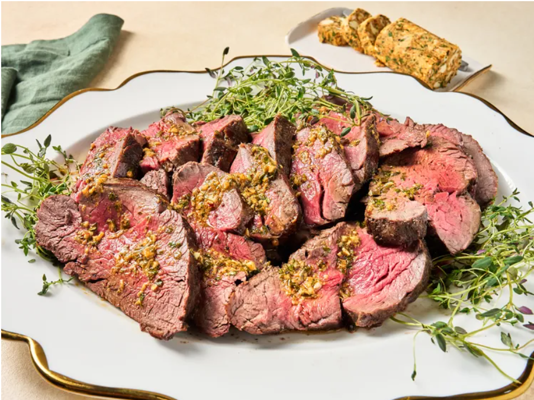

Home
Easy Oven Beef Tenderloin

Photo by Allrecipes
Description
This easy oven beef tenderloin proves that this beautiful
holiday centerpiece dish is within reach of any cook. All
you need is a very hot oven. We served it with cowboy
butter—the recipe is linked below.
Ingredients
- 1 (4 pound) trimmed beef tenderloin
- 3 tablespoons butter, melted
- 2 teaspoons soy sauce
- 2 teaspoons kosher salt, or to taste
- 1 1/2 teaspoons freshly ground black pepper, or to taste
Steps
- Preheat the oven to 500 degrees F (260 degrees C). Place tenderloin at room temperature about 30 to 45 minutes before cooking.
- Stir butter and soy sauce together; rub mixture over the entire tenderloin. Sprinkle evenly with salt and pepper on all sides. Place tenderloin on a foil-lined baking sheet. Fold the thin tail end underneath so that the tenderloin is at an even thickness.
- Bake in the preheated oven for 25 to 30 minutes or until desired degree of doneness (25 minutes will yield rare-medium rare). Let stand for 20 to 30 minutes before slicing and serving.
Home